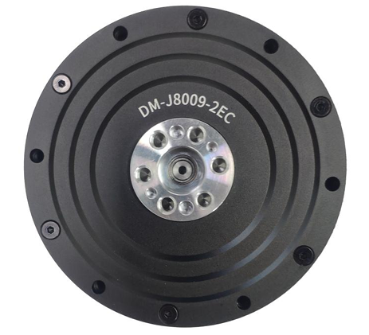
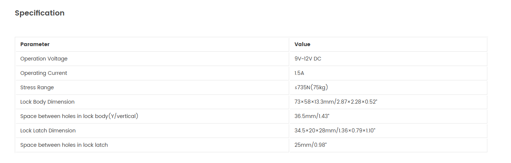
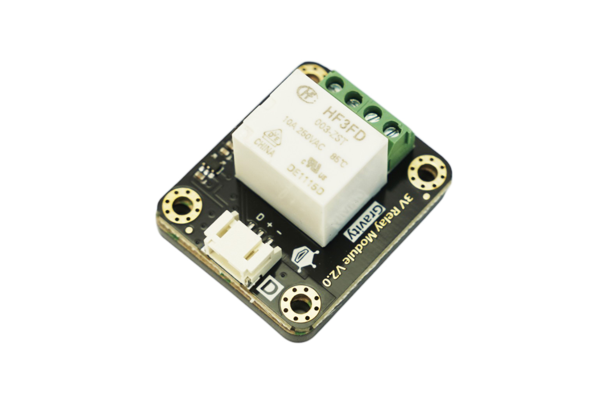
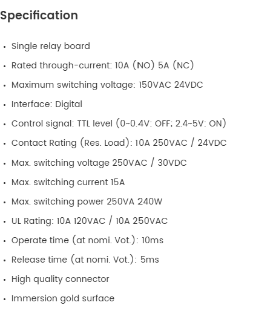

Measuring Force
Estimate firing force during pull-back to ensure consistent launch energy and support tuning of pull depth.
Delivering precise launch control, the D.A.R.T. launcher electronics subsystem coordinates elastic draw and release to produce repeatable dart propulsion across the required operational range.

Y4 EE
The comprehensive V-shaped system methodology used for this subsystem is detailed in the Yaw Electronics section.
Reliable launcher operation depends on four core functional elements: measuring force, detecting latch engagement, actuating the release mechanism, and driving the linear rail with a motor.
Estimate firing force during pull-back to ensure consistent launch energy and support tuning of pull depth.
Confirm latch lock-in after pull-back so release is only permitted when the mechanism is fully engaged.
Trigger release on command with repeatable timing and sufficient actuation authority across operating pullback distances.
Provide controlled carriage pull-back motion with stable speed and torque to meet preload targets without overshoot.
Evolution at a glance
The interim electrical & software write-up captured the intended launcher architecture before full robot bring-up. At that stage, several choices—especially latch release and tension sensing—were justified from datasheets and mechanical intent rather than from integrated testing. First electronics onboarding on hardware quickly surfaced coupling issues (solenoid release versus draw depth, feeder timing, and torque observability) that the interim document could not predict.
Select V1 above to view the next version's details.
The first bring-up goal was to test the launcher in isolation. This was done to confirm that the carriage could pull the elastic bands under motor control, that the latch could be released on command, and that the operator could stop the system quickly in an emergency. It also allowed the band to be pulled to specific distances so that its behaviour could be characterised, providing the data needed to develop the V3 launcher design.
Interim reasoning (pre-full onboarding) favoured a solenoid for release because it offered the shortest path to a software-triggered "fire," required only a single GPIO write, and allowed straightforward bench wiring next to a relay for clean energisation of the coil. A remote controller was included for manual draw and release, as well as emergency stop control during mechanical experiments. These choices were reasonable based on datasheets and design intent, but whether release could remain reliable at larger pull distances under real band load still had to be verified through bench testing, as documented in the testing subsection below.
Hardware components
Launching motor — Damiao DM-J8009-2EC
⌄Main draw actuator for launcher carriage and elastic-band preload. The module is an integrated Damiao servo actuator with onboard sensing and communication for closed-loop draw control.

| Parameter | Value |
|---|---|
| Electrical — motor | |
| Rated voltage | 24 V (supports 24-48 V) |
| Rated / peak current | 20 A / 50 A |
| Rated / peak torque | 20 N.m / 40 N.m |
| Rated speed | 100 rpm @ 24 V; 200 rpm @ 48 V |
| No-load speed (max) | 160 rpm @ 24 V; 320 rpm @ 48 V |
| Motor characteristics | |
| Reduction ratio | 9 : 1 |
| Polar logarithm | 21 |
| Phase inductance | 61 uH (@25 C) |
| Phase resistance | 0.09 ohm (@25 C) |
| Mechanical | |
| Outer diameter | 98 mm |
| Height | 61.7 mm |
| Motor weight | About 896 g |
| Encoder / interfaces | |
| Encoder bits / count | 14-bit; 2 encoders |
| Encoder type | Magnetic encoder (single-turn output-shaft absolute position) |
| Control interface | CAN @ 1 Mbps |
| Parameter interface | UART @ 921600 bps |
Solenoid lock + relay trigger
⌄Electromagnetic lock release path used for early launcher experiments. The solenoid lock provided the unlatch action, while a relay trigger path was added to switch the lock circuit during bring-up tests.




Remote controller
⌄Manual control channel used for safe launcher bring-up, direct trigger testing, and emergency stop authority during early mechanical experiments.


Microcontroller
⌄Primary control board used to coordinate launcher signals, command sequencing, and integration with actuator and sensor interfaces during electronics bring-up.


Test methodology
With this setup, there was an issue faced which was the inability to unlock the solenoid lock after a certain distance. The testing of the distance achieve was continued with a manual release of the solenoid lock.

Following this issue, the solenoid lock was tested at different pullback distances to determine the release voltage required at each position. A benchtop power supply was used to vary the input voltage during testing.
In each trial, the lock was pulled to a set distance, and the voltage was increased until release occurred. The test was then repeated for multiple distances to study the relationship between pullback distance and required release voltage.
Results and analysis
Measured dataset from V1 solenoid release bench tests.
Voltage vs. pullback distance at release
| Voltage (V) | Pullback at test (m) | Release outcome | Notes |
|---|---|---|---|
| 9.00 | 0.05 | OK | Minimum release voltage met |
| 9.00 | 0.08 | OK | Minimum release voltage met |
| 9.30 | 0.11 | OK | Release achieved with slight voltage increase |
| 10.10 | 0.14 | Marginal | Increasing voltage trend observed |
| 13.05 | 0.17 | Marginal | Release possible with higher voltage demand |
| 24.00 | 0.20 | Limit reached | Highest measured pullback in this dataset |
At a pullback distance of 0.25 m, even 24 V was not sufficient to release the band. Since 24 V was the maximum output of the benchtop power supply, it was judged to be unwise to operate the solenoid lock beyond its rated voltage in an attempt to force release.
The test results also showed that the voltage required for release increased exponentially with pullback distance. In addition, the pullback distance needed from the band exceeded the practical operating range of the solenoid lock. This showed that the solenoid-based release method became unreliable after a certain distance and was therefore not suitable for the launcher.
As a result, a different release solution had to be implemented in V2.
Interpretation: if increasing voltage mainly trades heat and inrush current for small gains in release reliability—while deep draws remain a moving target—then a position-controlled servo is a better match to the final requirement for repeatable, tunable release under varying preload.
Click V2 to view the solution to this issue.
V2 introduces the release-mechanism change and force-reading strategy update after V1 solenoid release limitations were observed.
Replacement of Solenoid Release with a Servo-Actuated Mechanism
After testing showed that the solenoid-based unlocking mechanism was not able to operate reliably, the release method had to be changed. In this version, the solenoid release was replaced with a servo that mechanically pulls the unlocking mechanism. This new approach was able to release the lock at the required distance, making it a workable solution for the launcher.
This is the same servo model documented in the feeder electronics section and reused here for the launcher release mechanism.

| Parameter | Value |
|---|---|
| Electrical | |
| Working voltage | 4.8-7.2 V DC |
| No-load speed (60°) | 0.18 s @ 4.8 V · 0.14 s @ 7.2 V |
| Running current | 140 mA @ 4.8 V · 200 mA @ 7.2 V |
| Stall torque | 23.5 kg·cm @ 4.8 V · 26.8 kg·cm @ 7.2 V |
| Stall current | 2600 mA ±10% @ 4.8 V · 3400 mA ±10% @ 7.2 V |
| Mechanical / Control | |
| Dimensions (L x W x H) | 40.0 x 20.5 x 40.5 mm |
| Mass | 56 g ±5% |
| Signal | PWM (digital amplifier) |
| Pulse width range | 500-2500 µs (neutral 1500 µs) |
| Dead band | 5 µs |
Replacement of Load Cell Force Measurement with Motor Torque Feedback
Compared to the interim (V0) architecture, the original plan of using a load cell to measure launcher tension or firing force was replaced with launching motor torque feedback obtained through CAN telemetry. In the earlier design, firing force was intended to be measured through a separate sensing path alongside the launcher. In this version, that separate load cell path was removed, and the required force information is instead inferred from the torque reading of the launching motor. This allowed the design requirement of monitoring firing force to still be met, while simplifying the system by removing the need for an additional strain-based sensing channel on the linear rail.
Torque Validation Testing
Testing was also carried out on the launching motor torque readings to check that they could be used for this purpose. The results of this testing are presented in the Launcher Design section.
Independent Launcher Code and Electrical Design
The current V0 code and V2 electrical design were developed with consideration for feeder interaction. However, some integration issues only became apparent when both subsystems were brought together and tested as a complete system.
Click on V3 to view the full system bring-up, along with the code and electrical changes needed to support integration.
V3 is the inclusion of the feeder: launcher and feeder are no longer brought up in isolation—timing, datums, and shared state must line up.
The V0 code served as a suitable baseline, as it captured most of the functionality required for launcher operation, apart from feeder-related considerations. Based on the control code developed in V0, V3 introduced the modifications needed to integrate the launcher with the feeder.
Improved Lock Detection
Compared to V0, the launcher was changed so it does not treat the lock as engaged the moment a signal is detected. In the earlier version, the system reacted right away, even though the physical parts still needed a short time to settle into place. In this version, the system waits about 2 seconds after the lock signal appears before confirming that the launcher is fully locked. This makes the locking process more reliable and helps avoid mistakes caused by brief or accidental sensor signals.
Clearer Behaviour After Locking
The behaviour after locking was also simplified. In the earlier version, the launcher could remain in a holding state while waiting for the next condition to be met. In this version, that waiting branch was removed. Instead, the launcher now responds more directly to the feeder-related signals. This gives the sequence a clearer flow and makes it easier to follow what the launcher is doing at each stage.
Position Saved Before Feeding
Another change was added before the launcher moves into the feeding stage. When the feeder sensor is triggered, the system now saves the launcher position before moving on. In simple terms, this means the launcher keeps a record of where it was at that moment. This helps the system move more consistently from locking to feeding and improves repeatability during operation.
Rotary Feeder Position Awareness
Compared to V0, the launching code was updated to account for the position of the rotary feeder. This was necessary because if the rotary feeder is not in the correct position, it may collide with the loaded dart while the launcher is moving. There is also a risk that the launcher could fire before the rotary feeder has moved clear of the firing path. By making the launching code aware of the rotary feeder position, the sequence becomes safer and more reliable.
Isolating the Battery of the Launching Motor
When the electronics were fully integrated onboard, repeated failures were observed in the electrical system. These failures initially appeared random, with the first damaged components being the buck converters supplying the high-power servos. Early suspicion was placed on possible short circuits or inaccurate buck converter ratings. However, subsequent investigation showed that the root cause was back EMF generated by the launcher motor.
Further firing tests revealed a consistent pattern: the electronics failed after each firing event or emergency stop. This indicated that when the motor was no longer holding the elastic band load, the stored energy in the stretched band drove the motor in reverse, causing it to generate back EMF. This back-fed into the shared electrical system and progressively damaged the electronics.
To address this issue, the launcher motor was connected to a separate battery supply. This isolated the motor from the rest of the onboard electronics and prevented the back EMF from propagating into the main control circuitry.
Limited Tuneability of the State Machine
At this stage, the state machine was complete, and launcher–feeder integration had already been achieved. However, tuning remained difficult due to the lack of a clear and practical method to adjust and validate the key variables.
Click on V4 to view the changes introduced to make tuning possible.
V4 is additional code written to aid tuning—supporting faster iteration when calibrating parameters and checking behaviour on the bench.
Easier Access to Tuning Parameters
Another improvement in V4 was that more of the launcher settings were made easier to access and adjust. In the earlier version, many important values were embedded more deeply within the control logic. In this version, key settings such as pullback torque, loading speed, firing speed, tolerance range, and forward travel distance were exposed more clearly as editable values. This makes it easier to fine-tune the launcher without having to modify multiple parts of the code.
Separate Tuning for Loading and Firing Speed
Compared to V3, V4 also separates the motion settings used during loading from those used during firing. In the earlier version, these stages were less clearly separated in terms of tuning. In this version, the launcher can use one speed limit for feeding and another for the firing pullback. This allows the loading stage to remain controlled and stable, while still allowing the firing stage to be adjusted independently for the required motion. As a result, tuning becomes more flexible and better matched to the actual operation of the launcher.
Easier Adjustment of Loading Distance
A major improvement in V4 was the ability to tune the loading distance more easily. In the earlier version, the loading sequence depended more heavily on fixed distance values that were less convenient to adjust. In this version, more of these distance-related settings were exposed as editable values, and extra intermediate steps were added to the sequence. This gives finer control over how far the launcher moves before reloading, and makes the loading process easier to refine during testing.
Improved Manual Testing and Tuning
V4 also introduced a clearer manual testing path for the launcher. In the earlier version, testing depended more heavily on the main automatic sequence. In this version, the launcher can also be driven manually during bench testing, and the release mechanism can be triggered directly when needed. This makes it easier to test the launcher in smaller steps, observe its behaviour more clearly, and adjust the system during development.
Clearer Tuning Structure
Overall, the main improvement in V4 was that the launcher became easier to tune. Compared to V3, the control method was simplified, more adjustable values were made easier to access, and important settings such as speed, distance, and tolerance could be changed more directly. This made the launcher more practical to refine and test, especially when adjusting loading distance and motion behaviour.